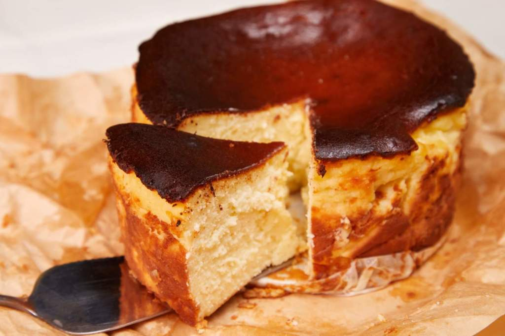

Basque Burnt Cheesecake

What is Basque Burnt Cheesecake?
Basque burnt cheesecake is a specialty dessert from the Basque region of Spain
Unlike American cheesecake, Basque cheesecake does not have a crust.
Basque burnt cheesecake comes out super dark and caramelized.
Ingredients
- 1 tablespoon soft unsalted butter, or as needed
- 3 (8 ounce) packages cream cheese, softened
- 1 cup white sugar
- ½ teaspoon fine salt
- 3 tablespoons all-purpose flour
- ½ teaspoon vanilla extract
- 4 extra large eggs, at room temperature
- 1 ¼ cups heavy cream
Instructions
- Preheat the oven to 400 degrees F (200 degrees C).
- Butter a 9-inch cake pan. Cut a sheet of parchment paper large enough to line the
inside of the pan by a few extra inches. Butter the paper and press it into the pan,
flattening any major creases. Trim away any excess paper from the sides until you
have an inch or two of overhang.
- Combine cream cheese, sugar, salt, and flour in a bowl. Stir and smear together with
a spatula until very smooth and creamy. Add vanilla extract and 1 egg; whisk to
combine. Whisk in remaining eggs, one at a time. Pour in heavy cream and mix until
smooth.
- Pour batter into the prepared pan. Tap the pan against the counter to burst any
excess air bubbles.
- Bake in the preheated oven until puffed, very well browned, and nearly burned on the ,
edges, 50 to 55 minutes. Increase oven temperature to 425 degrees F (220 degrees C)
in the last 10 minutes.
- Let cheesecake cool to room temperature, at least 25 minutes. Lift out onto a plate
and peel back parchment paper, using a knife or spatula if needed. Refrigerate until
thoroughly chilled, 4 hours to overnight.
Return to Homepage